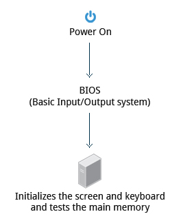

kernel
glue between hardware and applications
distribution
collections of software making up a linux based OS
boot loader
A boot loader is a program responsible for loading the Linux kernel with optional kernel parameters and the Linux initial RAM disk, known as initrd.
Linux kernel is the core of the Linux operating system, and it starts the init (short for initialization) process, or an init replacement such as systemd, immediately after being loaded.
The Linux initial RAM disk provides a temporary storage space for loading critical files into memory before the real root file system can be mounted.

service
filesystem
X Window system
GUI (Graphical User Interface)
bash
Bash is a command processor that typically runs in a text window where the user types commands that cause actions.
Bash can also read and execute commands from a file, called a shell script.
Like all Unix shells, it supports filename globbing (wildcard matching), piping, here documents, command substitution, variables, and control structures for condition-testing and iteration.
The keywords, syntax, dynamically scoped variables and other basic features of the language are all copied from sh. Other features, e.g., history, are copied from csh and ksh.
Bash is a POSIX-compliant shell, but with a number of extensions.

desktop environment
, a desktop environment (DE) is an implementation of the desktop metaphor made of a bundle of programs running on top of a computer operating system,
which share a common graphical user interface (GUI), sometimes described as a graphical shell.
The desktop environment was seen mostly on personal computers until the rise of mobile computing.
Desktop GUIs help the user to easily access and edit files, while they usually do not provide access to all of the features found in the underlying operating system.
Instead, the traditional command-line interface (CLI) is still used when full control over the operating system is required.
A desktop environment typically consists of icons, windows, toolbars, folders, wallpapers and desktop widgets (see Elements of graphical user interfaces and WIMP).
A GUI might also provide drag and drop functionality and other features that make the desktop metaphor more complete.
A desktop environment aims to be an intuitive way for the user to interact with the computer using concepts which are similar to those used when interacting with the physical world,
such as buttons and windows.
command line
shell
command line interpreter that interprets the command line input and instructs the operating system to perform accordingly
a shell is a user interface for access to an operating system's services.
In general, operating system shells use either a command-line interface (CLI) or graphical user interface (GUI), depending on a computer's role and particular operation.
It is named a shell because it is the outermost layer around the operating system kernel.
BIOS (Basic Input/Output System)
Starting an x86-based Linux system involves a number of steps.
When the computer is powered on, the Basic Input/Output System (BIOS) initializes the hardware,
including the screen and keyboard, and tests the main memory.
This process is also called POST (Power On Self Test).
The BIOS software is stored on a ROM chip on the motherboard.
After this, the remainder of the boot process is controlled by the operating system (OS).
partitions and filesystem
UEFI (Unified Extensible Firmware Interface)
GRUB (GRand Unified Bootloader)
GRUB is the most popular and the most feature-packed boot loader for the Linux operating system.
It is based on the now obsolete GRUB Legacy, which was created in 1995 by Erich Boleyn for the operating system GNU/Hurd.
GRUB supports both BIOS and UEFI, and it can handle all popular Linux file systems, including Btrfs, ext4, ReiserFS v3, VFAT, and XFS.
Compared to GRUB Legacy, modern GRUB is cleaner, more powerful, and safer.